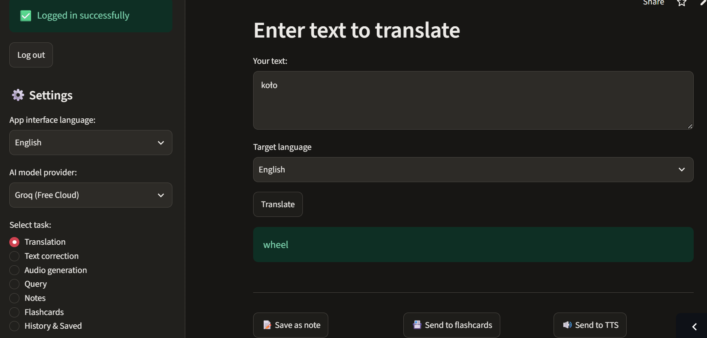
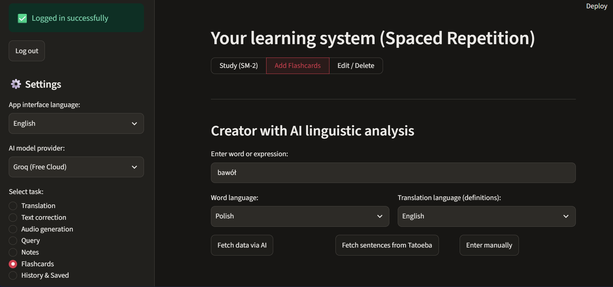
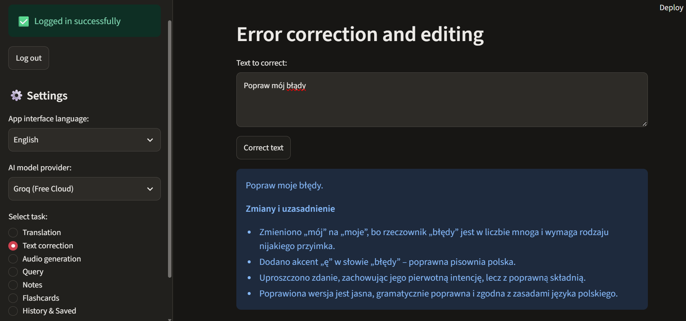

🌍 Lingilo — Personal AI Language Assistant
Live Application Link: https://lingilo-by-mb-v1.streamlit.app/

📝 Project Overview
Lingilo is an advanced, AI-powered web application designed to comprehensively support foreign language learning. It combines traditional memorization techniques (Spaced Repetition) with the power of Large Language Models (LLMs), semantic search, and speech transcription.
Lingilo is not just another translator – it is an intelligent environment that helps users understand context, analyze grammar, practice pronunciation, and systematically acquire new vocabulary.
📸 System Screenshots
| Login & Welcome Screen | Main Application Dashboard |
|---|---|
 |

| Smart Flashcards (SM-2) | Text Correction Module |
|---|---|
 |
 |


🚀 Core Features & Learning Modules
The application offers 6 main modes to support users at every stage of their learning journey:
📚 1. Smart Flashcards & Spaced Repetition System (SM-2)
- SM-2 Algorithm: Features a built-in Spaced Repetition algorithm that optimizes learning time by showing words exactly when users are about to forget them.
- AI Flashcard Creator: Just by typing a single word, the AI automatically generates its base form, grammatical features (case, tense, gender), definitions, inflections, and example sentences with translations.
- Authentic Context: Integration with the open Tatoeba database allows fetching real-life example sentences with a single click.
✍️ 2. Text Correction with Explanations
- Analyzes text written in a foreign language. The AI not only corrects grammatical and stylistic errors but also explains point-by-point why the changes were made and what caused the mistakes.
🗣️ 3. Pronunciation Training & Audio Generation (TTS)
- Converts any text or translated sentence into natural-sounding speech (Text-To-Speech) to practice the correct accent.
- Allows recording personal pronunciations and attaching them directly to the flashcards.
🎙️ 4. Voice Notes with Transcription
- Records voice notes in a foreign language, and the system automatically transcribes them into text using advanced speech recognition models, perfect for practicing spontaneous speaking.
🧠 5. Knowledge Base with Semantic Search
- All translations, expert queries, and voice notes are saved in the asynchronous database.
- Searches are performed "by meaning" (vector-based). If a user searches for "pets", the system finds notes containing "dog" or "cat", even if the exact keyword isn't present in the text.
💬 6. Chat with a Language Expert
- A dedicated module to ask complex linguistic questions (e.g., "What is the difference between 'make' and 'do' in English?") and receive a comprehensive, educational explanation from the AI.
🤖 AI Models Used & Their Roles
Lingilo is a truly AI-Native system utilizing specialized models for complex pipeline tasks:
1. Large Language Models (LLMs) — Groq & OpenAI
Provides precise translations, error corrections, and expert chats. It allows users to choose between lightning-fast, free open-source models via the Groq cloud (e.g., the Llama 3 family) and advanced models from OpenAI (e.g., gpt-4o), featuring a safe fallback to Groq if a paid API key is missing.
2. Instructor + Pydantic (Structured Outputs)
Forces unstructured LLM text outputs into strict, validated JSON objects based on Pydantic models. Used for parsing grammatical features (extracting tense, number, person, case) securely before adding entries to the database.
3. Whisper Model (whisper-large-v3)
An advanced multilingual speech recognition model run asynchronously via OpenAI / Groq API to transcribe user voice recordings into clean text.
4. Vector Models (sentence-transformers)
Uses a locally loaded paraphrase-multilingual-MiniLM-L12-v2 model to generate multi-dimensional vector embeddings, powering the deep semantic search engine.
5. AI Telemetry — Langfuse
Integrated using the direct HTTP API (generation-create) to track every AI trace, count token consumption (promptTokens, completionTokens), monitor production API costs, and evaluate generation quality latency.
🛠️ Infrastructure & Tech Stack
- Frontend & UI: Streamlit, Streamlit OAuth (Auth0 secure login).
- Backend & Async Core: Python 3.11 using native
asynciofor high-performance event loop pooling. - Database Layer: Asynchronous SQLAlchemy + PostgreSQL (compatible with Neon DB) or SQLite for local environments.
- AI Routing & Tools: LiteLLM (universal API router), Instructor, Sentence-Transformers.
💥 Production Case Study: Resolving AWS WebSocket Cookie Drops
!!! danger "Production Issue (Streamlit Community Cloud Infrastructure)"
During deployment on Streamlit Community Cloud (AWS server nodes), users faced random logouts upon pressing F5 (Hard Refresh). Investigation revealed that the cloud reverse proxy servers stripped cookie headers during WebSocket upgrade handshakes (GET /_stcore/stream), leading to an empty cookie dict inside Python. Furthermore, executing standard async JavaScript components to poll cookies froze the frontend React render cycle, causing the Auth0 login button to completely disappear from the landing page. This issue was absent in the local development environment (localhost).
🛠️ Applied Engineering Solution
The bug was mitigated by decoupling the unstable JS cookie management from the unauthenticated landing layout view and implementing a highly stable Hybrid Query Params Fallback strategy:
# Synchronous native URL query param parsing for F5 persistence
url_token = st.query_params.get("session_token")
if url_token and str(url_token).strip() != "" and url_token != "None":
st.session_state.token = {"access_token": url_token}
st.rerun()
- Address Bar Token Mapping: Upon successful Auth0 redirection, the access token payload is captured and appended safely as a secure query parameter (
?session_token=...) directly to the address bar. Since AWS reverse proxies do not strip URL parameters during WebSocket switches, the application securely extracts the token on fresh page loads. - Unconditional UI Rendering: The login interface layout was fully insulated from any async initialization blockers. The Auth0 action button renders instantly as pure HTML/JS, ensuring absolute interface stability and preventing rendering deadlocks.